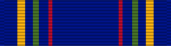

Nuclear Deterrence Operations Service Medal
Service awardNDOSM
For Airmen who directly supported the Nuclear Enterprise, retroactive to Dec. 27, 1991.
Check your eligibility and build your ribbon rackHow you get it
You earn this by meeting the requirements. No recommendation is needed. If it's missing from your record, current members can have their MPF add it. Veterans can request it from AFPC with a Standard Form 180 and supporting documents. Approved by your group commander (colonel or civilian equivalent) or higher on an AF Form 104. Separated and retired Airmen apply to AFPC with a Standard Form 180.
You qualify if any of these apply
- Supported the Nuclear Enterprise for 120 consecutive or 179 nonconsecutive days while assigned to a unit (wing or below) that was subject to a Nuclear Inspection
- Performed duties in nuclear operations (weapons storage, NC3, security, maintenance, EOD, certified aircrew, weapons loading, PRP management, and similar) for 120 consecutive or 179 nonconsecutive days
Quick facts
- Category
- Campaign and service
- Type
- Service award
- Authorized devices
- Authorized devices are the “N” device and the Oak Leaf Cluster.
- WAPS points
- 0
- Position in the AFPC listing
- 60 of 91 (listed in order of precedence)
Full AFPC fact sheet text
Background
The Secretary of the Air Force approved the Nuclear Deterrence Operations Service Medal on May 27, 2014 to recognize direct support to nuclear deterrence operations. The medal is authorized for Airmen who directly impacted the Nuclear Enterprise. The NDOSM may be awarded retroactively to Dec. 27, 1991 to fully-qualified Airmen.
Order of Precedence: The NDOSM shall be worn immediately after the Air and Space Campaign Medal and before the Overseas Ribbon Short tour.
Criteria
The NDOSM (basic) may be awarded to Airmen who, while assigned, attached, deployed or mobilized to a unit (wing, center or below), provided support to the Nuclear Enterprise for 120 consecutive or 179 non-consecutive days, and one of the following:
-Were subject to a Nuclear Inspection
-Performed duties in nuclear operations to include nuclear weapon storage facilities, nuclear command, control, and communication (NC3), cyber surety, security, safety, transportation, maintenance, facility management and maintenance, explosive ordnance disposal, aircrew certified for support to nuclear operations, weapons loaders, warning and attack assessment, personnel reliability program (PRP) management, or research, development and acquisition of nuclear systems.
The medal may be awarded posthumously and may be presented to appropriate representatives of the deceased.
Medal description
the front of the NDOSM has a laurel wreath surmounted by a nuclear symbol with a star bearing a disc in the center. The reverse has a circular inscription, "NUCLEAR DETERRENCE OPERATIONS SERVICE," a triangle between the first and last words, the U.S. Air Force "Hap Arnold" symbol and between its wings, the inscription "U.S. AIR FORCE."
Ribbon description
The ribbon is predominantly blue with yellow, green and red stripes from left to right and right to left within each edge.
Authorized device
Authorized devices are the “N” device and the Oak Leaf Cluster.
An “N” device will be worn on the NDOSM for Airmen who for 179 non-consecutive days performed duties:
Within the missile complex in direct support of Intercontinental Ballistic Missile operations in Missile Maintenance (21MX, 2M0XX), Munitions and Maintenance (2W0XX, 2W1XX, 2W2XX), Security Forces (31PX, 3P0XX), Services (3M0XX), Fuels (2F0XX), Transportation (2T1XX, 2T3XX), Civil Engineering (32EX, 3EXXX), Cyberspace Support (3D1X1, 3D1X2, 3D1X3, 3D100), Operations (11HXC, 13NX, 1A9X1, and13SX officers on or before Feb. 9, 2013) or Missile Facility Manager (8S000) in direct support of nuclear laden aircraft to include nuclear certified aircrew, aircraft maintenance technicians, munitions maintenance technicians, combat crew communications, nuclear certified controllers, and security forces performing guard duties.
How to apply
Airmen currently serving in, or no longer in, a qualifying unit will submit an AF Form 104, Service Medal Award Verification or Memorandum In–Lieu of the AF Form 104 (this letter should be used to submit multiple nominees with the same approval authority. See formatting instructions below) to the current Group commander (colonel or civilian leader equivalent) and above. Once approved, the completed AF Form 104 or Memorandum In–Lieu of the AF Form 104 will be routed to the servicing Military Personnel Flight (MPF) for update into the member’s record.
Furthermore, upon update in MilPDS, MPFs will mail (via the U.S. Postal Services) the source document authorizing the medal(s) (AF Form 104 or memo in-lieu of) for filing in the Master Personnel Record (MPR) to:
HQ AFPC/DP1ORM 550 C Street Joint Base San Antonio – Randolph Texas 78150
Finally, once AFPC receives the AF Form 104 or Memorandum In-Lieu of, the documents will be redacted by AFPC to ensure only one individuals name appears on the document placed into the Airman’s official record (Example: 20 individual names on one memorandum, this will be redacted 19 times to ensure only one Airman’s information is placed into the official record). However, the approving official’s signature/name must appear on each page of the approved medals (ie. each page). This will provide relief for approving officials to sign one (1) page vs. 20 times.
Memorandum In–Lieu of Instructions
The memorandum In-Lieu of the AF Form 104 allows for multiple names (depending on font size used (10/11/12 font)) and must contain the below format, and each single page must be signed by the approving authority:
(Unit designated letterhead)
Awarding medal to retired/separated/deceased airmen
Active Duty
All requests must be submitted on a Standard Form 180, Request Pertaining to Military Records and sent to: AFPC/DPSIDR, 550 C Street, Joint Base San Antonio-Randolph, TX 78150 and be accompanied by supporting documentation. The primary next of kin of deceased Airmen will submit requests in accordance with the guidance provided in this paragraph. Proof of one day of eligibility may qualify the retired, separated or deceased Airmen for the NDOSM (basic); all other criteria must be met to qualify for the “N” device. Applications will be validated by Air Force Personnel Center Recognitions Section.
Air National Guard and Air Force Reserve
Submit applications through the Total Force Service Center. Ensure Category is "Recognition" and Subject includes "NDOSM". Documents can also be mailed to: Headquarters Air Reserve Personnel Center 18420 E. Silver Creek Ave, Bldg 390, MS68, Buckley AFB CO 80011. Applications will be validated by Air Reserve Personnel Center Recognitions Branch.
Applicable supporting documents
Supporting documents may consist of Contingency Exercise Deployment orders, pay travel vouchers, evaluations, decoration citation, AF Form 286, Personnel Reliability Program Qualification/Certification Action documents, Letter of Evaluation, and/or DD Form 214, Certificate of Release or Discharge from Active Duty or DD Form 215, Correction to DD Form 214, Certificate of Release or Discharge from Active Duty.
Source: Nuclear Deterrence Operations Service Medal fact sheet, Air Force's Personnel Center